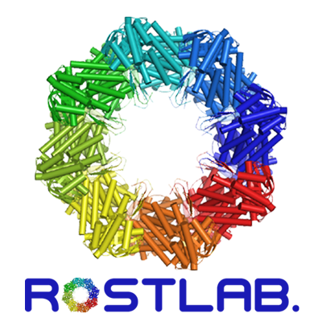

<footer class="page-footer blue lighten-3">
<!--  <div class="container">
    <div class="row">
      <div class="col l6 s12">
        <h5 class="white-text"></h5>
        <p class="grey-text text-lighten-4">You can use rows and columns here to organize your footer content.</p>
      </div>
      <div class="col l4 offset-l2 s12">
        <h5 class="white-text">Links</h5>
        <ul>
          <li><a class="grey-text text-lighten-3" href="#!">Link 1</a></li>
        </ul>
      </div>
    </div>
  </div>-->
  <div class="footer-copyright">
    <div class="row no-padding">
      <div class="container no-padding valign-wrapper">
        <div class="col s2">
          <div class="valign">Copyright 2016 © Rostlab</div>
        </div>
        <div class="col s4 valign-wrapper">
          <a id="tum-logo" href="https://www.tum.de/"  class="" target="_blank">
            
          </a>
          <a id="github" href="https://github.com/biojs" class="" target="_blank">
            
          </a>
          <a id="rostlab-logo" href="https://rostlab.org"  class="" target="_blank">
            
          </a>
          <a id="biojs-logo" href="https://biojs.net"  class="" target="_blank">
            
          </a>
          <a id="tgac-logo" href="http://www.tgac.ac.uk/"  class="" target="_blank">
            
          </a>
        </div>
        <div class="col s3">
          <div class="valign">Technische Universität München</div>
        </div>
      </div>
    </div>
  </div>
  <script type="text/javascript" src={{ "/js/jquery-2.2.0.min.js" }}></script>
  <script type="text/javascript" src={{ "/js/materialize.min.js" }}></script>
  <script type="text/javascript" src={{ "/js/init.js" }}></script>
  </footer>

